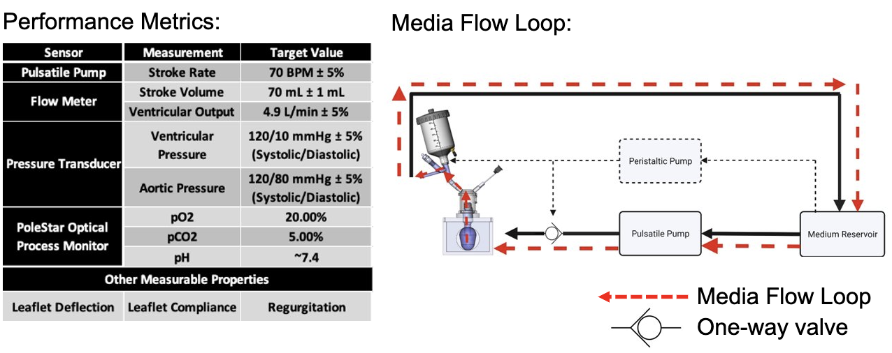
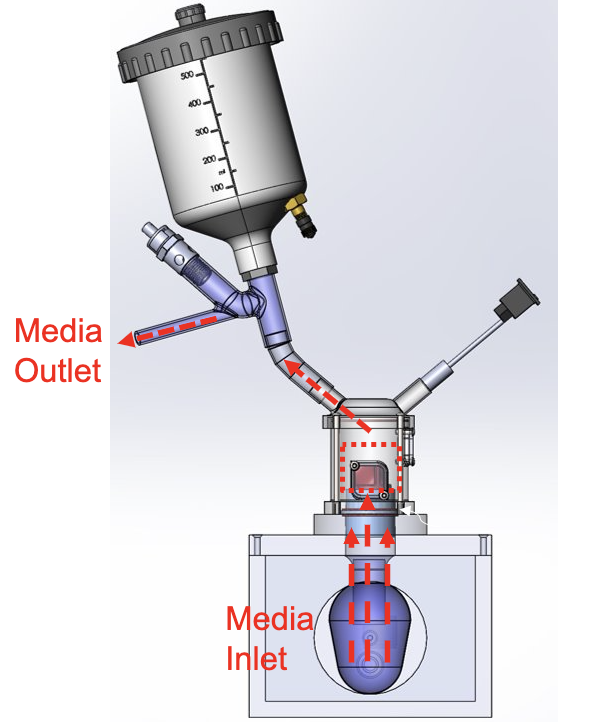
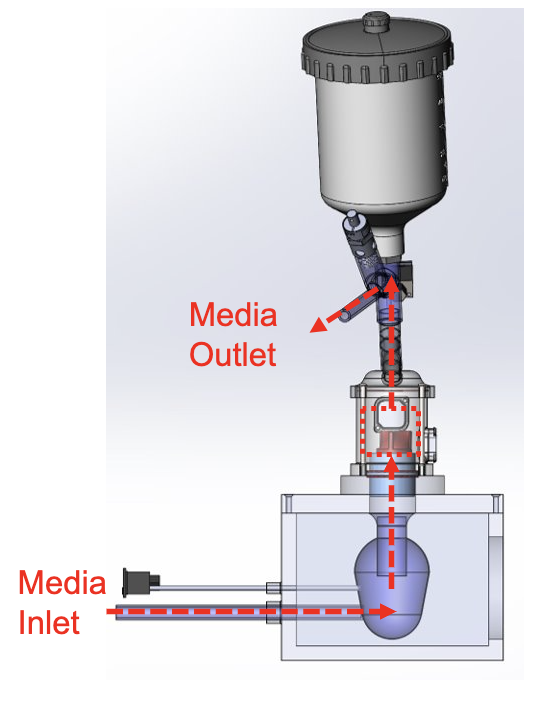
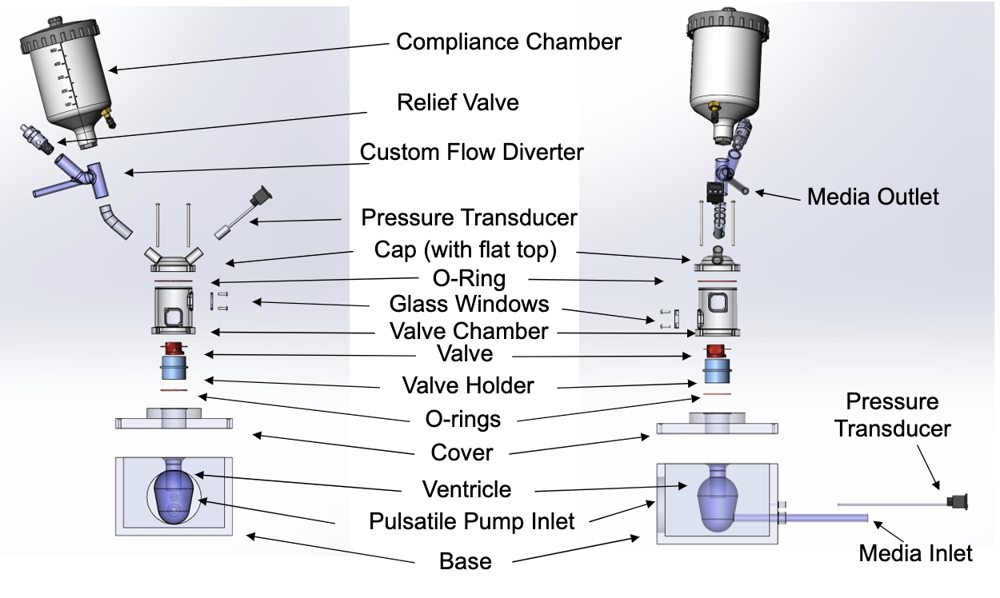

<div class="container-fluid">
<h3 style="color:black;"> My Final Project Ideas!</h3>
<p> I have decided to build a heart valve bioreactor for my final project to test and condition tissue engineered heart valves.
This week I designed the bioreactor in its entirety and built the base of the bioreactor from acrylic.
<br> <br>
(1) Design: I designed the bioreactor on SolidWorks (images below). The biroeactor consists of several essential parts. It will have
a base which I will make from acrylic that will house a ventricle which I cast from sillicone. The ventricle will contract and relax
just like the human heart (it will be attached to a pulsatile pump). Cell media will flow from a medium reservoir through the ventricle
up through the valve and the valve chamber. The valve chamber will be made from polycarbonate and will have two windows for optimal
imaging of the valve. It will also be sterile so that we can culture cells inside of it. Media will then flow out of the bioreactor and
pst a compliance chamber which will control the pressure on the aortic side of the valve and then back to the media reservoir.

<img src="Reactor Flow Path.png" alt="Bioreactor2">



</p>